搭建Hexo博客
Hexo简介
Hexo是一个基于 node.js的快速生成静态博客的开源框架，支持 Markdown和大多数 Octopress插件，一个命令即可部署到 Github页面、 Giteee、 Heroku等，强大的APl，可无限扩，拥有数百个主题和插件。
环境搭建
安装Node.js
1 | Node.js的版本需要不低于10.13，建议使用Node.js 12.0及以上版本。 |
安装Git
1 | 从Git的官网选择相应的系统下载安装Git |
安装Hexo
安装
1 | # 在cmd中输入如下命令 |
安装好后，可以输入hexo -v查看版本
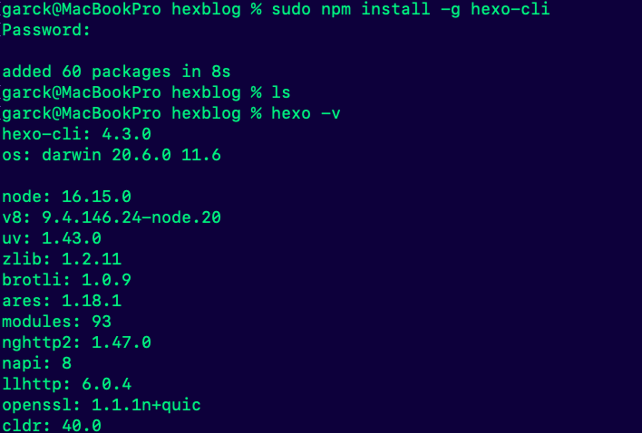
初始化Hexo
1 | # 按个人习惯，在某个盘符建立存储博客的文件夹。 |
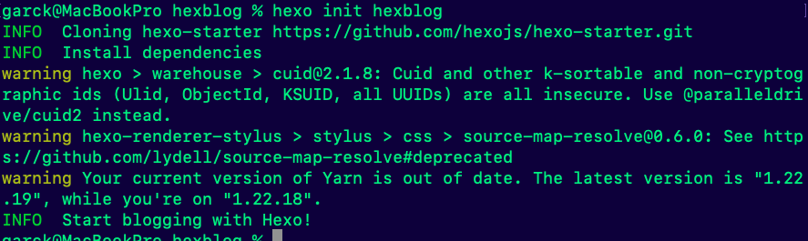
npm的安装
1 | # 首先进入到存储博客的文件夹中。 |
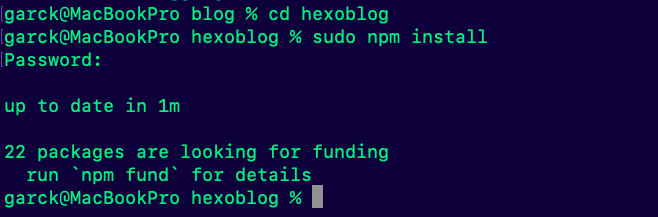
至此，Hexo本地站点就已安装好了，接下来就可以让它在本地跑起来。
启动项目
1 | # 在cmd中依次输入以下命令 |
访问网址：http://localhost:4000/，就能看到本地搭建的Hexo了
更换主题
git下载主题
在hexo目录下的themes文件夹下打开git bash，输入以下命令，下载主题
1 | git clone https://github.com/probberechts/hexo-theme-cactus.git |
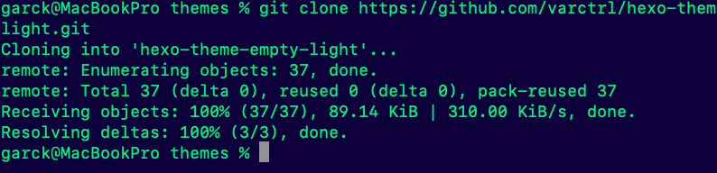
配置_config.yml文件
打开hexo目录下的_config.yml文件，修改theme，注意冒号之后的空格。
因为刚刚已经下载过主题，打开hexo目录下的themes文件夹会看到新生成的主题文件夹，将他的名字复制到_config.yml里并保存。
（ps：注意hexo和themes的主题文件夹里各有一个_config.yml文件，不要搞混了，后续增加各种效果还需要用到的）
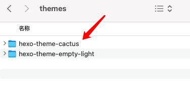
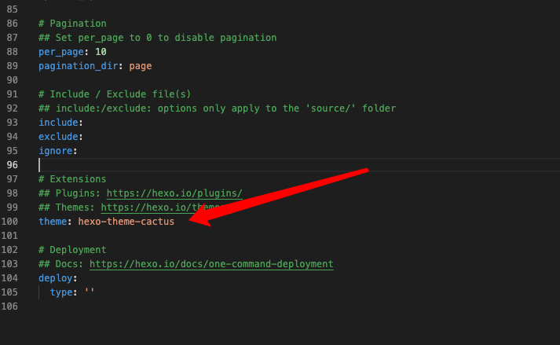
更新主题
在hexo目录下，打开git bash，输入以下命令，清除缓存，生成静态文件，查看效果
1 | hexo clean |
感觉效果满意就可以部署到GitHub上了
在hexo目录下，打开git bash，输入以下命令，清除缓存，将内容部署到GitHub
1 | hexo clean |
将博客部署到Github上
新建仓库
登录我们的 github，新建一个仓库
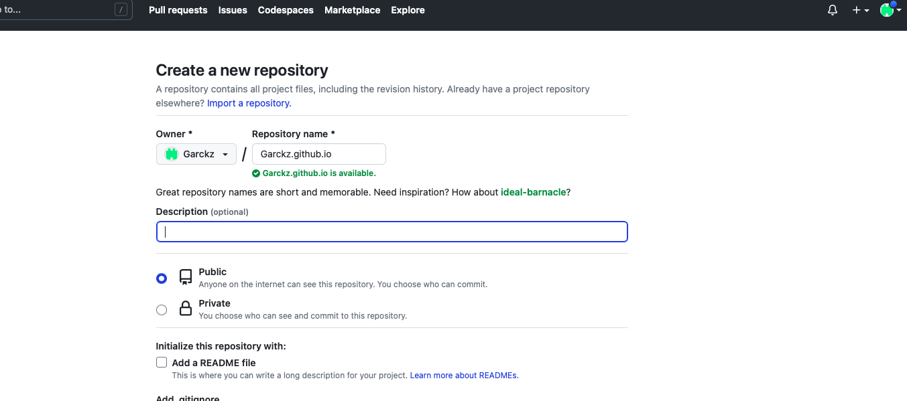
创建SSH key
首先要重新在git设置一下身份的名字和邮箱；删除.ssh文件夹
1 | git config --global user.name "username" |
在 git bash here 中创建一个ssh密钥
1 | 指令：cd ~/.ssh |
然后enter三连
生成两个文件： id_rsa和id_rsa.pub 存放在文件夹下(window在：C:\Users\admin.ssh)
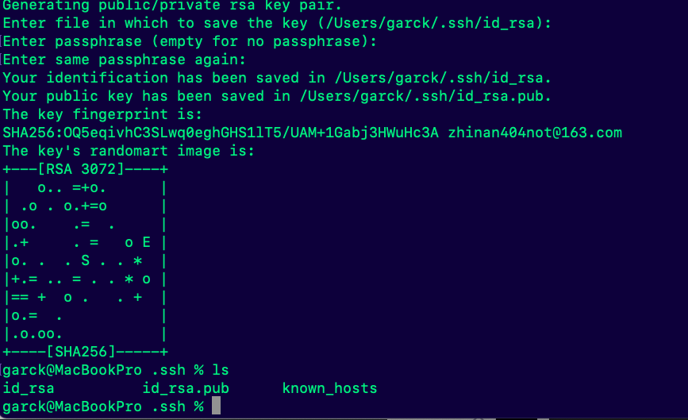
在GitHub的设置里面创建一个ssh密钥.
- Title：随意填写
- Key：将本地的id_rsa.pub文件用记事本打开，复制全部内容粘贴到GitHub仓库的SSH Keys 位置
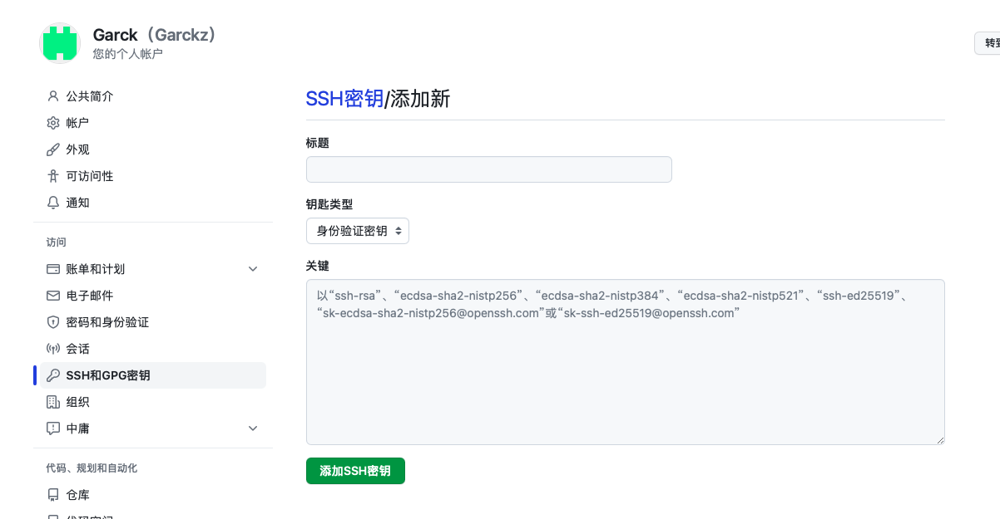
添加成功
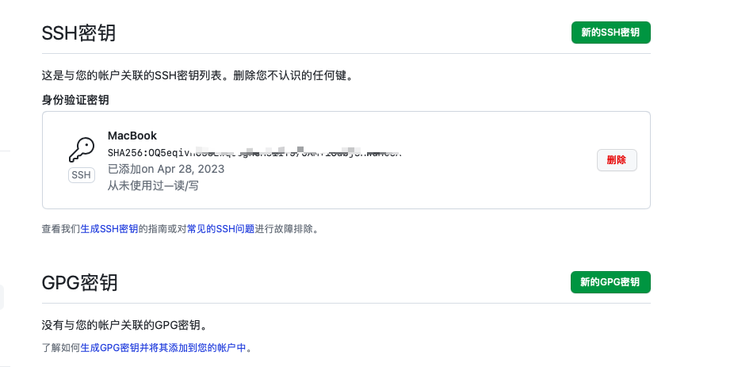
安装插件
1 | # 这里需要先安装deployer-git插件 |
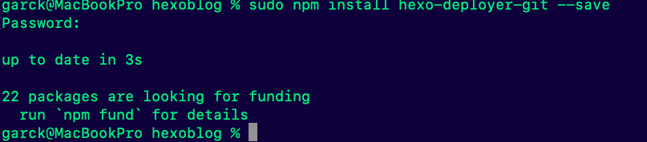
安装完成 git 部署插件后，需要设置下 blogs文件夹下的 _config.yml 这个文件
修改文件的 Deployment 部分,
安装完成上述的deployer-git插件之后，设置项目文件夹下的_config.yml 文件
1 | deploy: |
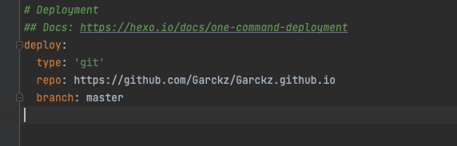
切记：分支branch切记修改为 main，之前github的默认主分支为master，现已经改为main ！！！
上传到Github
1 | # 清理 |
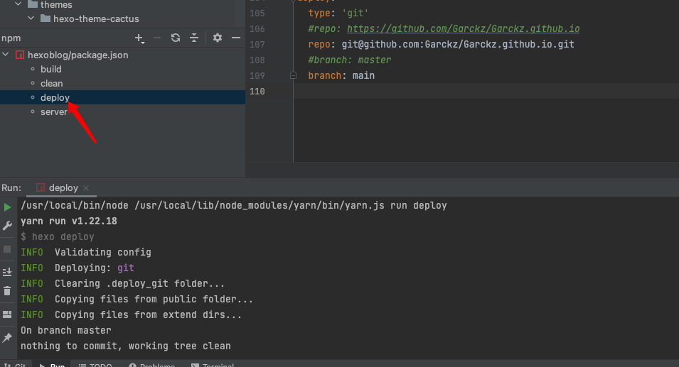
将博客部署到Gitee上
新建仓库
在Gitee上新建一个用来存放博客的仓库，此处需要特别注意路径的填写。
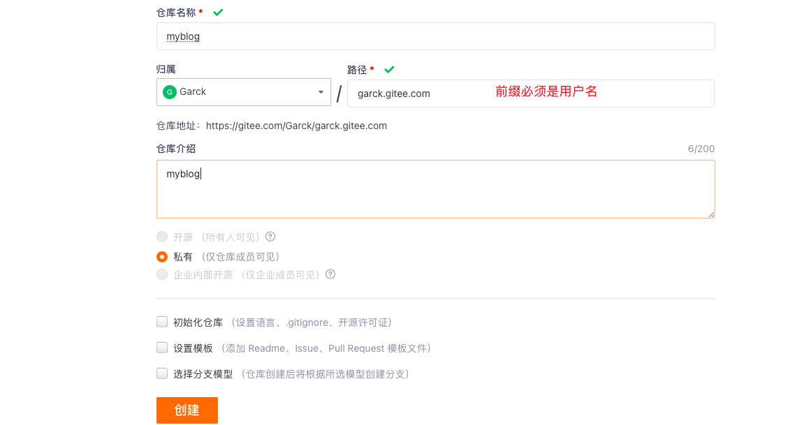
需要实名验证，所以就不用这个做了，很麻烦。